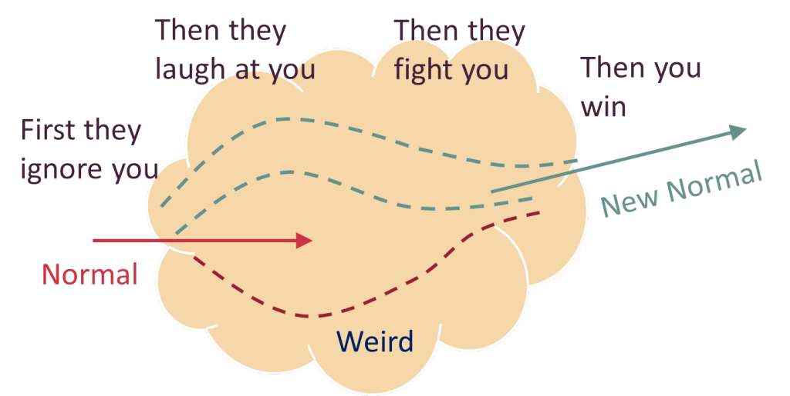
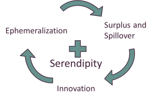
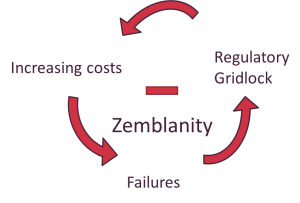

Prométhéens et pastoralistes
Les caractéristiques propres au logiciel en font un substrat technologique dont l’impact va bien au-delà des frontières du secteur. Pour comprendre pourquoi le logiciel dévore le monde et en prendre la pleine dimension, il faut commencer par étudier la nature des processus d’adoption de nouvelles technologies. En matière de technologies, le monde se divise en deux : il y a ceux qui croient les gens capables de changer en profondeur et ceux qui n’y croient pas. La philosophie des prométhéens est que face au progrès technique, l’humanité change. Elle le peut et elle le doit. Les pastoralistes quant à eux considèrent le changement comme une dégradation. L’opposition entre ces deux conceptions débouche sur un processus de diffusion des progrès technologiques qui est parfaitement résumé par une maxime bien connue dans le monde des start-up : d’abord ils vous ignorent, ensuite ils se moquent de vous, après ils vous combattent, et enfin vous gagnez1.{kind=link}

L’auteur de science-fiction Douglas Adams s’est mis du côté de l’utilisateur et a résumé ce phénomène en trois aphorismes sarcastiques :Comme ces dictons le suggèrent, le progrès technologique est en quelque sorte inévitable et il y a une certaine naïveté dans certaines formes de résistance. Pour comprendre pourquoi il en est ainsi, il faut prendre en compte l’idée que le progrès technologique est dépendant d’une trajectoire à court terme mais pas à long terme. Une fois découvertes, les possibilités technologiques les plus importantes sont systématiquement exploitées de façon à pousser leur potentiel au maximum. Tant que la moindre possibilité n’a pas été exploitée au maximum de son potentiel, on se bat et on s’adapte de façon étonnante pour la mettre à profit. Tout cela ne demande qu’une chose : un horizon exaltant fait de bidouillage permanent et un certain nombre de systèmes de valeurs qui doivent exister quelque part dans le monde. Certaines idées peuvent échouer. Certains usages peuvent ne pas s’imposer. Localement, des tentatives de résistance peuvent réussir, comme l’existence des Amish le démontre. Certains individus peuvent s’opposer à l’obligation de s’adapter au changement. Des nations entières peuvent décider de ne pas explorer certaines possibilités. Mais très souvent les technologies majeures s’imposent rapidement d’elles-mêmes, apportent des changements d’une certaine ampleur et les révolutions sociétales qui vont avec. Ce résultat non prévisible explique que durant les périodes de progrès technologiques rapides il semble y avoir une sorte de « bon côté de l’Histoire ». Savoir comment, quand, où et grâce à qui une technologie va exprimer le maximum de son potentiel est une question de sentier de dépendance. Se battre pour deviner la bonne réponse est l’affaire des entrepreneurs et des financiers. Mais une fois que les réponses auront été trouvées, le chemin improbable qui conduit du « bizarre » à la « normalité » sera largement oublié et rétrospectivement, tout le monde considérera la transformation sociétale profonde qui en aura résulté comme inéluctable. Le conflit entre les taxis et les VTC en est un bon exemple. Les taxis qui, lors des grèves et des manifestations de janvier 2014, ont attaqué les voitures Uber en cassant leurs pare-brises et en crevant leurs pneus, ont été comparés par les médias aux pastoralistes des temps modernes : les luddites3 du début du XIXe siècle4. Tout comme dans le mouvement luddite, les réactions contre les services de VTC tels qu’Uber ou Lyft n’ont rien d’une lutte contre le progrès en soi. Il s’agit de quelque chose de plus global et de plus complexe : une volonté d’en limiter l’ampleur et donc le caractère disruptif sur un mode de vie particulier. Comme Richard Conniff le note dans un article paru en 2011 dans le magazine Smithsonian5 :
- Tout ce qui est sur Terre le jour de votre naissance est normal et ordinaire ; ce n’est qu’un rouage dans le fonctionnement naturel du monde.
- Tout ce qui est inventé lorsque que vous avez entre quinze et trente-cinq ans est nouveau, passionnant et révolutionnaire et vous pourrez peut-être en faire un métier.
- Tout ce qui est inventé après vos trente-cinq ans est en contradiction avec l’ordre naturel des choses2.
Au début de la révolution industrielle, les ouvriers craignaient naturellement d’être remplacés par des machines de plus en plus efficaces. Pourtant, pour Kevin Binfield, qui a dirigé le recueil Writings of the Luddites en 2004, les luddites eux-mêmes « étaient totalement d’accord avec les machines ». Ils ont limité leurs actions aux manufactures qui utilisaient des machines « de façon frauduleuse et trompeuse » pour contourner la façon habituelle de travailler. « Ils voulaient juste des machines à faire des produits de qualité » ajoute Binfield. Leur seule exigence était qu’« ils voulaient que ces machines soient opérées par des ouvriers qui avaient été formés au métier et auxquels on aurait payé des salaires décents ».Dans cet article, R. Conniff défend l’idée que les premiers luddites se battaient simplement pour que soit préservée leur vision des valeurs humaines et conclut que « s’élever contre les technologies qui mettent l’argent ou la facilité au-dessus des autres valeurs humaines » est nécessaire à l’avènement du progrès technologique. Dans tous les secteurs dévorés par le logiciel, les réfractaires au progrès adoptent le même genre de raisonnement. Bien qu’en apparence raisonnable, cette approche est trompeuse : elle se fonde sur le fantasme que des nations entières peuvent et doivent s’accorder sur le contenu de ces valeurs humaines et peuvent décider quelles technologies adopter en se fondant sur ce consensus. En appeler à tout prix à des valeurs humaines « universelles » est souvent une mainmise des autoritaristes sur des valeurs résolument non universelles. Comme en témoignent les débats autour des VTC, il est bien difficile pour les consommateurs et les professionnels d’un même secteur d’activité de trouver un consensus autour de valeurs communes. Un autre exemple : les manifestations des taxis londoniens de 2014 ont amélioré le chiffre d’affaire des compagnies de VTC6, ce qui montre clairement que les consommateurs, même en se référant à des « valeurs humaines » partagées, ne se montrent pas nécessairement solidaires des professionnels établis. On peut être tenté d’analyser ce genre de conflits à la lumière du capitalisme classique ou des répercussions sur l’emploi. Le résultat aboutirait à une impasse : les libéraux mettent en avant que l’augmentation de l’offre fait baisser les prix ; des analyses plus sociales insisteront sur la destruction des emplois dans le secteur des taxis. Les deux camps essaient de s’attirer les bonnes grâces des clients des VTC. Pour les uns, cela va favoriser la création d’entreprises, pour les autres développer les revenus précaires. Pour les libéraux, les chauffeurs de VTC sont des professionnels indépendants ou des micro-entrepreneurs7 ; dans une optique plus sociale, ils grossissent les rangs du précariat (par analogie avec le prolétariat) et des jaunes. Les deux camps essaient d’imposer leur vision respective, chacun imposant son vocabulaire pour gagner la partie. Les deux analyses partagent une même vision des choses : elles exagèrent l’importance de l’habituel et elles font peu de cas de la nouveauté. Les applications mobiles semblent triviales alors que l’automobile est le symbole par excellence d’un mode de vie centenaire. Les sociétés organisées autour de la voiture semblent intemporelles et normales. Elles sont perçues comme honnêtes, il paraît évident qu’elles sont nécessaires pour préserver le futur et y prétendre. A première vue, dans un mode de vie qui semble immuable, les smartphones n’apportent rien d’autre qu’un peu de facilité dans la vie des consommateurs. Dans l’épaisseur du trait, leur valeur ajoutée est ignorée. Les deux analyses voient donc ce conflit comme un jeu à somme nulle : la valeur est redistribuée entre des gains d’un côté et des pertes de l’autre. Pourtant, on sait depuis Marshall McLuhan que les nouvelles technologies changent la façon dont on perçoit l’importance des choses. Même si les visions qui font du smartphone l’épicentre de notre vie future sont encore floues, elles font passer le co-voiturage d’un service de confort à une nécessité. En rendant la mobilité locale plus souple et moins chère, le co-voiturage permet de nouveaux modes de vie dans les zones urbaines. Les jeunes professionnels peuvent de plus en plus se permettre de travailler dans des villes offrant de nombreuses opportunités. De simples employés peuvent se déplacer plus facilement et moins dépendre des transports en commun peu pratiques ou des courses en taxi, qu’on utilise en dernier recours. Le restaurant du coin qui n’a pas assez de personnel peut utiliser des services dérivés du co-voiturage pour proposer des livraisons à domicile8. Il devient en effet de plus en plus difficile d’imaginer comment de nouveaux services de mobilité pourraient exister sans les smartphones. La conséquence, c’est qu’on passe d’une phase de dépendance au sentier, quand il n’était pas évident de savoir si une idée serait réalisable, à une phase d’indépendance au sentier, quand il devient presque inconcevable que d’autres idées ne puissent pas mettre cette idée-même à profit. Ces changements qui font boule de neige dans tous les styles de vie s’expliquent par ce que les économistes appellent le surplus du consommateur9 (quand les coûts de certaines dépenses baissent, on peut dépenser ailleurs l’argent économisé) et les externalités positives10 (des bénéfices imprévus dans des secteurs économiques sans liens entre eux ou entre deux zones géographiques). Pour les technologies dont l’impact est majeur, ces changements agissent comme un effet papillon : des causes ridiculement petites qui engendrent d’énormes effets inattendus. Parce que les surplus des consommateurs et les externalités positives sont imprévisibles, la majorité des nouvelles richesses créées par les nouvelles technologies (disons dans 90 % des cas) profitent en réalité à la société toute entière11, et pas seulement aux innovateurs qui ont suscité ces évolutions en foulant les premiers les sentiers de dépendance. C’est la transposition du concept de l’éternelle beta à la macroéconomie : les actions de la majorité prenant de vitesse les visions de l’élite, menant un grand nombre d’expérimentations de terrain qui transforme la société elle-même en laboratoire d’idées. On est bien loin des applications mobiles considérées comme des peccadilles dans la polémique sur le co-voiturage. En réalité, ces applications constituent le cœur même de la proposition de valeur du service. Dans ce conflit ouvert, elles ne profitent à aucun des participants. Si les modèles d’adoption des innovations étaient tous calqués sur l’industrie du taxi, une telle valeur n’existerait pas et le jeu à somme nulle deviendrait une prophétie auto-réalisatrice. De même quand des entrepreneurs tentent de s’accaparer la totalité, ou du moins la plus grande partie, de la valeur qu’ils ont voulu créer, le résultat est contre-productif : des avancées mineures qui, là encore, génèrent immanquablement des prophéties à sommes nulles. Tim O’Reilly, qui fut l’un des premiers à se spécialiser dans l’édition d’ouvrages techniques, a résumé la substantifique moelle de ce phénomène dans la maxime : « créez plus que valeur que vous n’en captez ». Pour les produits les plus importants, la valeur sociétale éclipse la valeur capturée. Bien que largement invisibles, le surplus du consommateur et les externalités positives font bien plus qu’améliorer le niveau de vie du plus grand nombre. En réorientant de manière aléatoire les énergies créatrices nouvellement libérées, ces deux phénomènes économiques font avancer le progrès technologique en s’appuyant sur le paradigme de l’abondance. L’essentiel de l’énergie se détourne pour alimenter des innovations étonnantes dans des secteurs inattendus. Une petite partie de cette énergie revient de manière inattendue et améliore l’innovation originale de façon telle que les créateurs eux-mêmes ne l’avaient pas anticipée. Les mêmes retours d’expérience améliorent également les innovations dérivées de la première, ce qui en renforce l’impact bien au-delà d’une simple « diffusion technologique ». L’histoire du moteur à vapeur est une bonne illustration de ces deux effets. Tout le monde s’accorde sur le fait que le surplus du consommateur généré par le moteur à vapeur de James Watt a déclenché la révolution industrielle en Grande-Bretagne alors qu’il avait été initialement conçu pour l’industrie minière en Cornouailles. Ce qui est moins connu en revanche12, c’est que le moteur à vapeur a été grandement amélioré par des centaines de bricoleurs anonymes qui ont ajouté des « micro-inventions » dans les décennies qui ont suivi l’entrée dans le domaine public des brevets de James Watt. Une fois qu’une invention tombe dans ce que Robert Allen appelle un « cadre d’invention collective » qui permet à un grand nombre d’individus et d’entreprises de partager librement les informations et de bricoler l’innovation à leur guise, les évolutions se rassemblent dans un élan irrésistible et l’innovation passe de « bizarre » à « nouvelle normalité ». Au-delà des mines de Cornouailles au début des années 1800, la vallée du Connecticut dans les années 1870-189013, la Silicon Valley depuis les années 1950 et la région de Shenzen depuis les années 1990 sont des exemples de régions favorables aux inventions collectives. Toutes ces régions créatives composent un vaste horizon technologique : un atelier mondial de bricolage. Comme le démontre Joel Mokyr dans son ouvrage devenu classique Lever of Riches14, une technologie peut être dans une phase de dépendance au sentier pendant des siècles, mais une fois qu’elle entre dans une phase d’innovation collective, le surplus du consommateur et les externalités positives se conjuguent dans un même élan et alors les évolutions à venir deviennent imprévisibles et inéluctables. Une fois reconnu ce caractère d’inévitabilité, il est possible de parier sur les idées qui se feront jour sans entrer dans les détails pour autant. On peut parier sur le co-voiturage et la voiture autonome dès aujourd’hui sans avoir besoin de connaître précisément ce que l’avenir leur réserve. Les consommateurs que nous sommes font l’expérience de ce genre d’évolution avec ce que Buckminster Fuller a appelé l’éphéméralisation : la capacité apparemment magique de la technologie de faire de plus en plus avec de moins en moins. La loi de Moore en est une illustration contemporaine mais l’éphéméralisation est en fait une caractéristique de toute évolution technologique. Il fut un temps où l’eau potable était tellement difficile à trouver que des populations entières souffraient de maladies endémiques d’origine hydrique et étaient obligées d’utiliser des méthodes coûteuses et inefficaces telles que faire bouillir l’eau à la maison. Aujourd’hui, environ 10% de la population mondiale seulement n’a pas accès à l’eau potable15. Il y eut une époque où l’on pouvait se battre pour des diamants. Les diamants synthétiques modernes sont impossibles à distinguer des vrais et deviennent de plus en plus communs. Le résultat est un cercle vertueux mû par des styles de vie plus riches et des cascades d’innovations toujours plus innovantes qui permettent le développement de la sérendipité. Le surplus du consommateur et les externalités positives engendrent encore plus de surplus du consommateur et d’externalités positives. Pour les consommateurs, c’est ce que Brad deLong appelle « tendre vers l’utopie16 » et pour les entreprises, c’est « la prospérité pour tous » selon l’expression d’Edmund Phelps. Quand en outre ce cercle vertueux est alimenté par une technologie logicielle dévorante, l’impact de long terme est considérable.
{kind=link}
{kind=link}

Qu’il s’agisse des enthousiastes ou des sceptiques envers l’innovation, tout le monde se trompe lourdement sur la nature de ce cercle vertueux. Typiquement, les sceptiques déplorent les modifications des modes de vie qu’il entraîne et en appellent au retour des valeurs traditionnelles. Certains enthousiastes quant à eux s’enflamment régulièrement pour de pseudo-révolutions dérivées de romans de science-fiction, au lieu de laisser leur imagination être pleinement guidée par les possibilités qui s’offrent à eux. Ils déplorent donc le manque d’attention générale envers le projet de société cher à leur cœur et dénigrent tous les projets concurrents. Dans les deux cas, le résultat est le même : on en appelle au contrôle du cercle vertueux. Les deux types de reproches favorisent ceux qui souhaitent s’approprier le surplus créatif de façon autoritaire (soit les grandes entreprises se réservent la plus grande part des bénéfices, soit l’Etat se les approprie au moyen de la fiscalité) et à endiguer le surplus du consommateur (en réduisant l’accès aux innovations technologiques). Ce ne sont là que deux tentatives désespérées pour orienter les énergies créatives dans quelques directions prédéterminées. Deux versions macroéconomiques du vieux rêve des luddites : que jouir des avantages du paradigme de l’abondance sans pour autant abandonner le déterminisme soit possible. Les sceptiques veulent quant à eux prolonger les lignes d’un mode de vie bien établi, et les amateurs des prétendues révolutions aspirent à en faire un mode de vie en soi. Il s’agit là de deux cas d’approche pastorale, l’équivalent des approches puristes pour les domaines techniques. L’approche pastorale souffre précisément des mêmes modalités d’échec prévisible que l’autoritarisme moderniste. Tout comme les visions puristes dans le logiciel, les visions pastorales cherchent obstinément à gagner des jeux à sommes nulles spécifiques plutôt que de se laisser porter indéfiniment par des jeux à sommes non nulles. Toute tentative de résistance à des visions pastorales se solde par un progrès prométhéen et ce cercle vertueux fonctionne plutôt bien. L’évolution qui en résulte est un impact sociétal maximal qui aurait été impossible avec des visions déterministes forcément limitantes. Exactement comme le principe du consensus approximatif et du code qui fonctionne permet la création d’excellents logiciels, le surplus du consommateur et les externalités positives créent les grandes sociétés humaines. Exactement comme les approches puriste et pragmatique débouchent dans le logiciel sur la sérendipité et la zemblanité, les approches pastorales et prométhéennes débouchent sur la sérendipité et la zemblanité à l’échelle de la société toute entière. Quand l’approche pastorale en appelle au conservatisme, l’horizon technologique se déplace ailleurs, causant souvent des siècles d’immobilisme. C’est précisément ce qui est arrivé en Chine et dans le monde arabo-musulman aux alentours du XVe siècle, quand l’horizon technologique s’est déplacé en Europe. Céder aux sirènes de l’autre type d’approche pastorale, qui consiste à chercher de façon déterministe la prochaine grande révolution au prix d’innombrables avancées marginales, apporte seulement quelques améliorations mineures. Dans un premier temps, les gains procurés par ces modèles peuvent s’avérer excellents mais on finit par aboutir invariablement à un renforcement généralisé d’institutions corporatistes autoritaires. On s’engouffre dans un cercle vicieux qui étouffe inexorablement l’innovation.{kind=link}

Le programme Apollo, par exemple, a certes parfaitement répondu à la demande du président Kennedy (faire marcher un homme sur la lune en dix ans). Il a également permis l’inexorable montée en puissance du complexe militaro-industriel en dépit des avertissements de son prédécesseur (Dwight D. Eisenhower). Les soviétiques ont fait encore pire : ils ont accompli des progrès tout aussi impressionnants dans la course à l’espace mais leur modèle de société a implosé sous le poids de l’autoritarisme. Si les Etats-Unis ont été préservés d’un tel résultat, c’est que l’horizon d’innovation s’est déplacé vers la côte Ouest17 et en a profité pour s’émanciper du complexe militaro-industriel. Une partie de l’énergie créative qui s’était graduellement atténuée a retrouvé de la vigueur avec le transfert vers un environnement plus favorable. Alors que le logiciel dévore le monde, nous sommes tentés une fois encore de céder à la tentation des approches pastorales. Et une fois encore le défi consiste à ne pas céder à la facilité.[1] Cette citation faussement attribuée à Gandhi semble, ironiquement, avoir été prononcée en 1918 par le syndicaliste Nicholas Klein dont la citation exacte est : « D’abord, ils vous ignorent. Ensuite, ils vous ridiculisent. Et ensuite, ils vous attaquent et veulent vous brûler. Et ensuite ils construisent des monuments en votre honneur. » C’est probablement à une étude d’Elting Morrison datant de 1968 qu’on doit la première reformulation claire de cette idée (et pas de la citation) pour caractériser la résistance au progrès technologique (voir Men, machines and modern times, The MIT Press, 1968). En se fondant sur une étude approfondie de l’arrivée dans l’US Navy d’une nouvelle technologie d’artillerie mise au point par William Sims à la fin du XIXe siècle, il a établi un modèle en trois étapes qu’on peut résumer ainsi : « D’abord ils vous ignorent, ensuite ils soutiennent que votre idée est impossible et ils finissent par vous insulter. » La notion approchante de disruption définie par Clayton Christensen en constitue la forme moderne la plus courante, bien que la résistance soit toujours la même, y compris quand les changements sont introduits sans disruptivité mais par du prosélytisme interne, comme ce fut le cas pour l’artillerie navale de Sims. [2] Ces trois citations se trouvent dans le dernier livre, posthume, de Douglas Adams (The Salmon of Doubt, 2002. Traduction française : Fonds de tiroir, Gallimard, 2004). La présente traduction de ces trois aphorismes nous est propre (ndt). [3] Artisans anglais s’étant révoltés au début du XIXe siècle contre les manufacturiers et leurs machines qui commençaient à leur faire concurrence (ndt). [4] Voir notamment cet article du site Salon.com : http://www.salon.com/2014/01/13/uber_and_the_neo_luddites/ [5] Voir http://www.smithsonianmag.com/history/what-the-luddites-really-fought-against-264412/#ixzz2qPY1F6WP [6] On pourra se référer à cet article qui témoigne d’une augmentation de 850% des ouvertures de compte sur Uber à la suite de la grève des taxis européens en juin 2014. [7] L’expression est prise ici au sens strict et ne désigne pas le régime fiscal de l’auto-entreprise (ndt). [8] Depuis la rédaction de cet ouvrage, Uber a effectivement lancé le service dans quelques grandes villes, dont Paris, sous le nom UberEats (ndt). [9] Le surplus du consommateur est la différence entre le prix que le consommateur est prêt à payer et le coût réel dudit service. Cette différence peut être affectée à d’autres dépenses. [10] Pour simplifier, les externalités positives désignent les bénéfices qu’un secteur économique tire de ce qui se passe dans d’autres secteurs économiques sans rapports avec le premier. Cette expression est également utilisée pour désigner ces bénéfices dans l’économie transfrontalière. [11] Voir William D. Nordhaus, « Shumpeterian Profits and the Alchemist Fallacy », Yale Economic and Policy Discussion Paper, N° 6, 2005 [12] Voir Alessandro Nuvolari : « Collective inventions during the British Industrial Revolution : the case of the Cornish pumping engine », Cambridge Journal of Economics (2004) 28 (3). pp. 347-363. (http://cje.oxfordjournals.org/content/28/3/347.short) [13] La richesse technologique qui s’est développée autour des arsenaux à Springfield et Harper’s Ferry dans la Vallée du Connecticut [il s’agit ici du fleuve, ndt] a été le sujet d’un roman de Mark Twain : Un yankee à la cour du roi Arthur (1889). [14] Joel Mokyr, Lever of Riches, Oxford University Press, 1992. A notre connaissance ce livre n’a pas été traduit en français (ndt). [15] Dès 2010, les objectifs de l’ONU concernant l’eau avaient déjà été dépassés, deux milliards de personnes y ayant eu accès depuis 1990. Les chiffres de 2015 [date de rédaction du présent document, ndt] prévoient que 8% des gens n’y aient pas accès. Bien que l’accès à l’eau ne signifie pas l’eau potable, c’est tout de même un progrès considérable. Voir le rapport sur la question rédigé en 2012 pour le Congrès américain par Tiaji Salaam-Blyther : https://www.fas.org/sgp/crs/misc/R42717.pdf [16] Ici l’auteur cite un article célèbre de Brad deLong dont le titre original est « Slouching Towards Utopia ». Il s’agit d’une approche originale de l’économie du XXe siècle (ndt). [17] Le centre spatial de Cap Canaveral, qui abritait le programme Apollo, est situé en Floride, sur la côte Est des Etats- Unis (ndt).